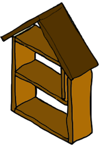
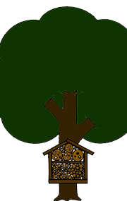

zelfmaken?
Altijd al de bijen willen helpen? Dat kan door zelf een Bijen Hotel te maken volg de instructies hier beneden.
stap 1: Muren
Gebruik diverse materialen zoals houten kisten, pvc buizen of vogelhuisjes voor bijenhotelmuren. Zorg ervoor dat het geheel waterdicht is en een dakje heeft voor bescherming. Bijen zullen langskomen zolang er voldoende buizen in de muur passen.
stap 2: gangen
Bijen leggen eitjes in gangetjes, holle takken of kleine buisjes, waaronder diverse materialen zoals bamboe, riet, braam, rozen en brandnetels. Houd gangen aan één zijde gesloten, met diameters tussen 2 en 12 millimeter en een diepte van 3 tot 20 centimeter, om diversiteit aan bijen te bevorderen.
stap 3: plaatsen
Hang het bijenhotel op een warme, droge plek uit de wind, bij voorkeur op het zuiden gericht tegen een muur. Plaats het in een aantrekkelijke omgeving met veel bloeiende bloemen van het voorjaar tot de nazomer, zodat de eitjes warm en droog blijven in de gangen.
